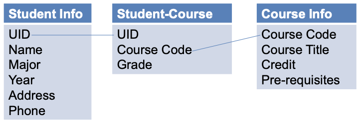
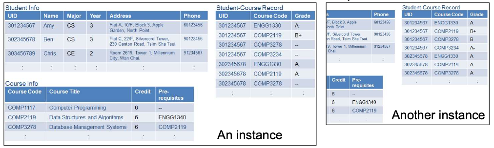

What is Data, Database and Database Management System
Data = Some values, associated with meaning to provide information.
7 Problems of storing data in file systems
Difficulty in accessing data - inefficient, different programs for different tasks
Data redundancy and inconsistency
Multiple copies → more space → expensive
`Inconsistency` by only updating one forgetting another
Data isolation
Data scattered in different files in different formats → difficult to write new programs to retrieve appropriate data
Concurrent-access anomalies - multiple users updating same file at same time
Integrity problems
Integrity constraints become part of program code
Hard to add new constraints or change existing ones
Security problems
Not every user should be able to access all the data
Atomicity problems
In system failure, can data be restored back to the consistent state as before the failure?
Database = A collection of related data organized in a way that data can be easily accessed, managed and updated
`원자성 Atomicity` : 트랜잭션이 중간까지만 실행되는 것은 없다 → 하나도 안되거나 전부 되거나 둘 중 하나
Database cannot understand the language or method which an application uses to fetch the data
Why do we need a DBMS
Database Management System (DBMS)
SW that allows creation, definition and manipulation of database, allowing users to store, access, update, and delete data → solve problem 1
provides protection and security to the databases → solve problem 6
maintains data consistency in case of multiple users → solve problem 4
understands the commands and the queries which define what data is required by the App or Website and invoke the operation of accessing the database to retrieve the data → solve problem 3, 5
What are the goals of DBMS?
Hide certain details of how the data are stored and maintained → Data Abstraction
Provides an environment that is convenient and efficient to use in storing and retrieving data.
What data to store → Data modeling
How to store/retrieve/manage the data → Database Languages
Physical level
Describes HOW the data are actually stored
Describes complex low-level data structures
e.g. Hash table / Binary tree / Heap / ...
Physical data independence
Using hash table or binary tree won’t affect the data stored in the database.
Compressing the data in the physical level won’t affect the user interfaces of an application program.
Logical level - Schema and Instance
Describes WHAT data are stored
Describes the relationship among data
Data modeling uses the logical level of abstraction
Schema is overall design of the database

Instance is the actual content of the database at a particular time

View level
Describes only part of the entire database
Many users only need to access a part of the database - i.e. different users have different view → Simplifies users’ interaction with the database system
Database Design Process
Requirement Collection & Analysis
Gather user requirements
Analyze user activities
Conceptual Design (Data Modeling) - create ER Data Model
Use a data model to describe data requirements, relationship & constraints
A program module in DBMS that converts high-level user requests to efficient low-level commands to database.
높은 수준의 사용자 요청 → 효율적인 낮은 수준의 명령으로 변환해 데이터베이스에 전달하는 DBMS 프로그램 모듈
DDL(Data-Definition Language) interpreter
→ interprets DDL statements and records the definition in the data dictionary.
Compiler and linker (Embedded DML precompiled)
→ converts DML statements embedded in an application program to DML queries
응용 프로그램에 포함된 DML문을 DML쿼리로 변환
DML compiler and organizer
→ translates DML statements in a query language into optimized low-level instructions that the query evaluation engine understands.
Query evaluation engine
→ Executes low-level instructions generated by the DML compiler
Storage Manager
A program module in DBMS that
→ provides the interface between the low-level data stored in the database and the application programs and queries submitted to the system,
→ is responsible for efficient storing, retrieving and updating of data.
Buffer manager
→ fetches data from disk storage into main memory
→ decides what data to cache
File manager
→ manages allocation of disk space and data structures
Authorization and integrity manager `권한 및 제한(접근성) 관리자`
→ checks the authority of users to access data
→ tests for the satisfaction of integrity constraints
Transaction manager
→ ensures the database remains in a consistent state despite system failures,
→ ensures concurrent transaction executions proceed without conflicting
Disk Storage
Data files
→ store the database itself
Data dictionary
→ stores metadata about the structure (schema) of the database
Indices
→ provide fast access to the data items
Statistical data
→ store statistical information about the data in the database
→ used by the query processor to select efficient ways to execute a query
Database Administrator
Coordinates all the activities of the database system
Duties include:
Schema definition
Specifying integrity constraints
Granting user authority to access the database
Storage structure and access method definition
Monitoring performance
Routine maintenance
Acting as liaison with users
Schema and physical organization modification
Summary
- Why do we need a DBMS?
- Avoid 7 problems of storing data in file systems
- Maintains data consistency, provide protection and security to the databases
- Connecting bridge between applications and databases
- Goals of DBMS?
- Data abstraction
- Provide an environment that is convenient and efficient to use in storing and retrieving data
- Database design process
1. Requirement collection + analysis
2. Data Modeling
3. Logical Design
4. Physical Design
5. Implementation + Loading
6. Testing + Evaluation
- Component of DBMS
- Database user
- Query processor
- Storage Manager
- Disk Storage
- Database administrator